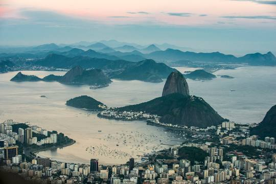
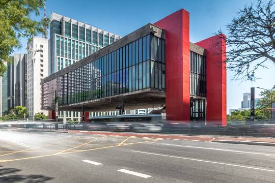
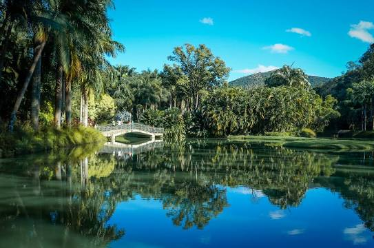

Pão de Açúcar
Monumento Natural dos Morros do Pão de Açúcar e da Urca é um complexo de morros localizado no bairro da Urca, na cidade do Rio de Janeiro, no Brasil. É composto pelo Morro do Pão de Açúcar e pelo Morro da Urca. Junto com a estátua do Cristo Redentor, é o maior cartão-postal da cidade do Rio de Janeiro e um dos mais famosos do Brasil.
Musseu de arte de São Paulo
Museu de Arte de São Paulo Assis Chateaubriand é um centro cultural e museu brasileiro concebido em 1947 idealizado pelo jornalista paraibano Assis Chateaubriand com o crítico de arte italiano Pietro Bardi. Considerado uma das mais importantes instituições culturais brasileiras.
Instituto Inhotim
O Instituto Inhotim é a sede de um dos mais importantes acervos de arte contemporânea do Brasil e considerado o maior museu a céu aberto do mundo. Está localizado em Brumadinho, uma cidade com 38 mil habitantes, a apenas 60 quilômetros de Belo Horizonte.